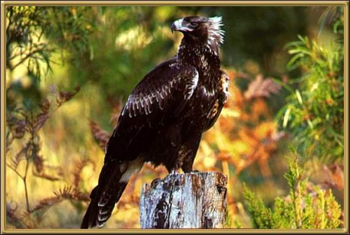

These are a sedentary bird, found throughout Australia. They live in pairs, and are our national bird! The cover a huge range and you can always tell when one is nearby or overhead as the garden goes completely quiet!
Photographer: Unknown